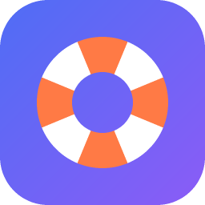

ДискСпасКлиент Яндекс Диска выдаёт ошибки 502 и 504, зависает и бесконечно перезапускается? ДискСпас обходит «больные» серверы и скачивает ваши файлы на компьютер.
Скачать бесплатноКак это работаетЕсли сервер вернул пустой ответ или ошибку, файл откладывается и повторяется позже, а остальные продолжают качаться.
Число одновременных загрузок растёт, пока растёт скорость, и снижается при перегрузке. Ничего настраивать не нужно.
Остановили, выключили компьютер, пропал интернет — продолжит с того же места, скачанное не качается заново.
Фото, видео и документы идут вперёд, служебные и временные файлы — в самый конец или вообще пропускаются.
Вам прислали ссылку disk.yandex.ru/d/… ? Вставьте её, и программа скачает всё по ней, без входа в аккаунт.
Контрольная сумма считается прямо во время скачивания, повреждённые файлы не остаются незамеченными.
Скачайте программу и откройте двойным кликом. Установка не нужна. Откроется окно в браузере.
Для своего Диска нужен токен только на чтение (в окне есть пошаговая подсказка). Для ссылки «поделиться» ничего не нужно.
Весь Диск или отдельные папки, место на компьютере. Программа покажет размер и проверит свободное место.
Видно скорость и сколько осталось. Окно можно закрыть: загрузка продолжится, пока работает программа.
Программа бесплатная, с открытым кодом (лицензия MIT). Без установки: скачали, запустили двойным кликом.
Скачать ДискСпас★ Поставить звезду на GitHub
Помогло? Звезда на GitHub помогает другим найти программу. Вопросы: @ArtKanareyka в Telegram.
Часть серверов хранения принимает соединение, но не отдаёт данные: клиент ждёт, получает 502/504 и начинает заново. ДискСпас быстро определяет такие ответы, откладывает файл и возвращается к нему позже.
Не гарантируем. Если серверы Яндекса упорно не отдают отдельные файлы, они остаются в отчёте, и программа докачает их при следующем запуске с той же папкой.
Нет. Токен выдаётся только на чтение. Не удаляйте файлы из облака, пока не убедились, что копия в порядке.
Нет. ДискСпас — независимая программа, не связанная с Яндексом и не одобренная им. Она использует открытый API Диска.
Программа пока не подписана платным сертификатом, поэтому Windows может показать предупреждение. Нажмите «Подробнее» → «Выполнить в любом случае».